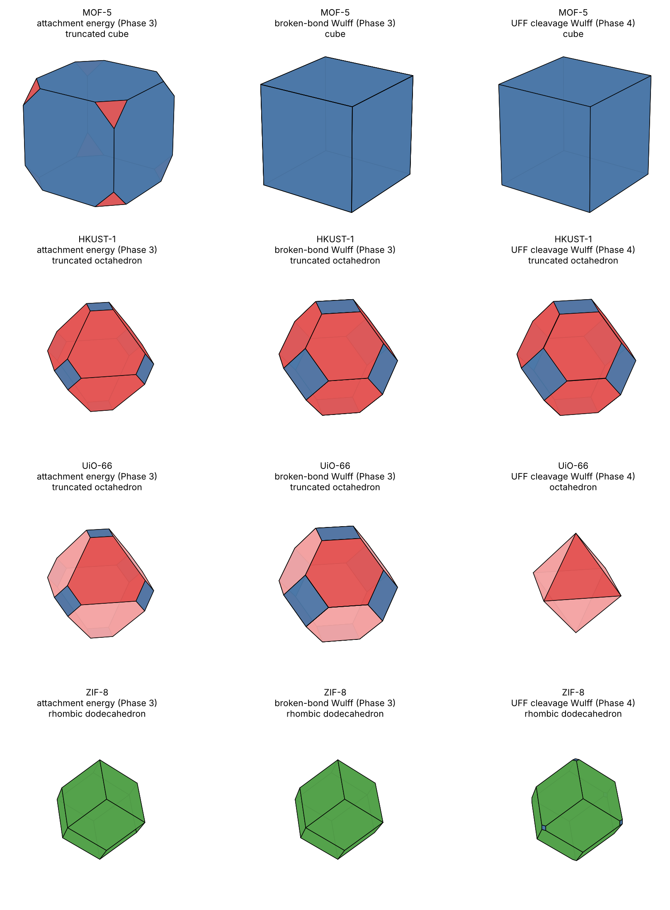

1What This Page Does
- You know
- Faces, slices and the shapes they bound (Learn), the propositions (Mathematics), and the graph-counting energies of Faces from the graph.
- This page adds
- Energies computed from the atoms of each framework, not just its net: a force field assigns a cost to every bond and every van der Waals contact that a cut would break.
Phase 3 counted broken links between building blocks and treated every link as equal. Here each atom pair is weighted by a force field, the cleaving plane is placed through the real atomic structure, and the cheapest plane position is chosen for every face. The result is a cleavage energy γ(hkl) for each face, and from the set of γ values a Wulff shape.
2The Ideas, From Scratch
Surface energy
To make a surface you must pull a crystal apart along a plane. That costs energy, because bonds and attractions across the plane are broken. The cost per unit area of new surface is the surface energy γ, in J/m². Pulling apart creates two surfaces, so γ is half the energy of the cut per unit area. Faces with low γ are cheap to create and are the ones a crystal shows (Wulff, 1901).
What the force field adds up
where
- Dij, xij
- well depth and contact distance for the atom pair, from the Universal Force Field (UFF; Rappé et al. 1992) with the geometric-mean rule Dij = √(DiDj).
- εpair
- energy lost when the pair is separated: −EvdW for a non-bonded pair, and a flat 70 kcal/mol for a bond (UFF's default bond well depth). Pairs two bonds apart or closer are excluded, as in UFF.
- cpair(s)
- number of planes, spaced d apart with offset s, that fall between the two atoms.
- V
- volume of the unit cell. The factor d/V turns an energy per cell into an energy per area (it is Proposition 13 of the Mathematics page).
The plane offset s is scanned over one full period and the lowest γ is kept: that is the termination a growing crystal would prefer.
3Checks Against Exact Answers
| Test | Exact answer | Code |
| Simple cubic, one bond per cell edge, (100) | γ = D/(2a²) | equal to 9 digits |
| Simple cubic, (110) | 2 bonds cut per cell, plane spacing a/√2 | equal to 9 digits |
| fcc Lennard-Jones crystal, (100) | explicit sum over every pair across the middle plane of a slab 10 cells thick | agree within 2% (they matched to 3 digits) |
| fcc Lennard-Jones, ordering of faces | γ111 < γ100 < γ110 | holds |
These four checks are in code/morphology/tests_phase4.py. They test the counting formula (2) independently of any MOF.
4Results for the Four MOFs

Source: code/morphology/figs_phase4.py; data: code/morphology/results/phase4_results.json and phase3_results.json.
| MOF | Lowest-energy face | Phase 4 shape | Phase 3 broken-bond shape | Seen in experiment |
| MOF-5 | {100} | cube | cube | cube |
| HKUST-1 | {111} | truncated octahedron | truncated octahedron | octahedron (cube to octahedron with additives) |
| UiO-66 | {111}+ | octahedron | truncated octahedron | octahedron with a modulator; additive-free crystals poorly faceted |
| ZIF-8 | {110} | rhombic dodecahedron | rhombic dodecahedron | rhombic dodecahedron |
Against the additive-free crystals of the experimental benchmark (Experiment page), the dominant face is right for three of the four frameworks: 100 for the MOF-5 cube, 111 for the HKUST-1 octahedron (the force-field shape is a truncated octahedron with 111 dominant) and 110 for the ZIF-8 rhombic dodecahedron. UiO-66 gives an octahedron, the habit grown with a modulator, which this model does not contain; the two additive-free UiO-66 records report poorly faceted cubes, which the model does not give, so UiO-66 counts as a miss (the weakest of the benchmarks). The MOF-5 cube depends on the flat bond cost (Section 6). Experimental sources are listed on the Faces from the graph page and the Experiment page.
MOF-5 (Fm-3m, 424 atoms in the conventional cell, 512 bonds)
| Face | d (Å) | γ total (J/m²) | from bonds | from vdW |
| {100} | 25.87 | 0.148 | 0.145 | 0.0024 |
| {110} | 18.29 | 0.416 | 0.411 | 0.0037 |
| {111} | 14.93 | 0.255 | 0.252 | 0.0036 |
| {211} | 10.56 | 0.421 | 0.415 | 0.0053 |
| {221} | 8.62 | 0.442 | 0.436 | 0.0055 |
| {310} | 8.18 | 0.374 | 0.368 | 0.0050 |
HKUST-1 (Fm-3m, 624 atoms in the conventional cell, 792 bonds)
| Face | d (Å) | γ total (J/m²) | from bonds | from vdW |
| {100} | 26.30 | 0.288 | 0.281 | 0.0067 |
| {110} | 18.59 | 0.307 | 0.298 | 0.0086 |
| {111} | 15.18 | 0.251 | 0.244 | 0.0074 |
| {211} | 10.74 | 0.497 | 0.488 | 0.0090 |
| {221} | 8.77 | 0.691 | 0.680 | 0.0103 |
| {310} | 8.32 | 0.656 | 0.645 | 0.0105 |
UiO-66 (F-43m, 456 atoms in the conventional cell, 640 bonds)
| Face | d (Å) | γ total (J/m²) | from bonds | from vdW |
| {100} | 20.52 | 0.947 | 0.924 | 0.0203 |
| {110} | 14.51 | 1.005 | 0.980 | 0.0214 |
| {111}+ | 11.85 | 0.421 | 0.400 | 0.0180 |
| {111}− | 11.85 | 0.421 | 0.400 | 0.0180 |
| {211}+ | 8.38 | 1.296 | 1.273 | 0.0222 |
| {211}− | 8.38 | 1.296 | 1.273 | 0.0222 |
| {310} | 6.49 | 1.412 | 1.388 | 0.0235 |
ZIF-8 (I-43m, 276 atoms in the conventional cell, 312 bonds)
| Face | d (Å) | γ total (J/m²) | from bonds | from vdW |
| {100} | 16.99 | 0.364 | 0.337 | 0.0255 |
| {110} | 12.01 | 0.269 | 0.238 | 0.0246 |
| {111}+ | 9.81 | 0.619 | 0.584 | 0.0307 |
| {111}− | 9.81 | 0.619 | 0.584 | 0.0305 |
| {211}+ | 6.94 | 0.585 | 0.550 | 0.0313 |
| {211}− | 6.94 | 0.586 | 0.550 | 0.0314 |
| {310} | 5.37 | 0.832 | 0.799 | 0.0324 |
“From bonds” and “from vdW” are the two parts of the total. The bond part is 91–99% of every value, because MOFs are mostly empty pore and the planes cut few atoms, so there is little van der Waals contact to break. This is why the Phase 4 shapes largely agree with Phase 3's.
5How Much Do the Assumptions Matter?
The van der Waals part is the most uncertain, so it was multiplied by 0, 1, 5, 20 and 100 and the Wulff shape recomputed. Scaling the bond energy instead gives exactly the same set of shapes, since only the ratio of the two parts matters.
| MOF | vdW × 0 | × 1 | × 5 | × 20 | × 100 |
| MOF-5 | cube | cube | cube | cube | truncated cube |
| HKUST-1 | truncated octahedron | truncated octahedron | rhombicuboctahedron-like | rhombicuboctahedron-like | rhombicuboctahedron-like |
| UiO-66 | octahedron | octahedron | octahedron | octahedron | truncated octahedron |
| ZIF-8 | rhombic dodecahedron | rhombic dodecahedron | truncated rhombic dodecahedron | truncated rhombic dodecahedron | truncated rhombic dodecahedron |
The dominant face (MOF-5 {100}, HKUST-1 {111}, UiO-66 {111}, ZIF-8 {110}) is the same at every weight. What does change is the share of the smaller faces: at ×100 the {100} faces of HKUST-1 grow from 22% to 44% of the surface area and the {110} faces of ZIF-8 are joined by 18% {100}. So the dominant face is robust, and the exact minor-face proportions are not.
6What This Does Not Do
- No relaxation. Real surfaces reconstruct, which lowers γ by an amount that can differ between faces.
- No electrostatics. Zr–O clusters carry large partial charges; ignoring them probably understates the cost of cutting UiO-66, and charge terms could change which faces win. This is the first thing to add next.
- Flat bond energy. Every bond is given the same 70 kcal/mol, so a metal–oxygen bond and a carbon–carbon bond cost the same. A sensitivity test that lowers only the metal–ligand cost to 0.5 and 0.25 of that (Experiment page) leaves HKUST-1 and UiO-66 unchanged and ZIF-8's {110} dominant, but turns the MOF-5 cube into a truncated cube and then a truncated octahedron. Fitting a separate energy for each bond type is the next refinement.
- No solvent or modulator. In a real synthesis a solvent or additive adsorbs on some faces and slows them. That is how the cube-to-octahedron change of HKUST-1 is produced, and it is not in a vacuum cleavage energy.
- UiO-66 {111}+ and {111}−. They come out equal here, since the model has no way to tell the two halves apart, so the tetrahedron seen in some reports is not reproduced.